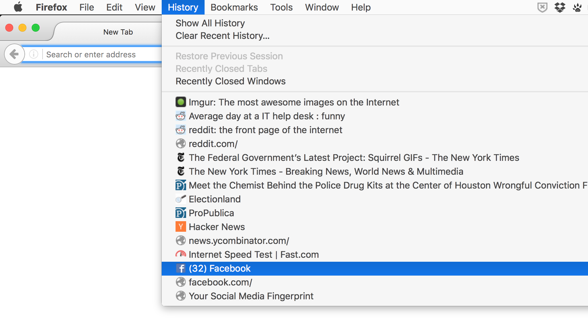
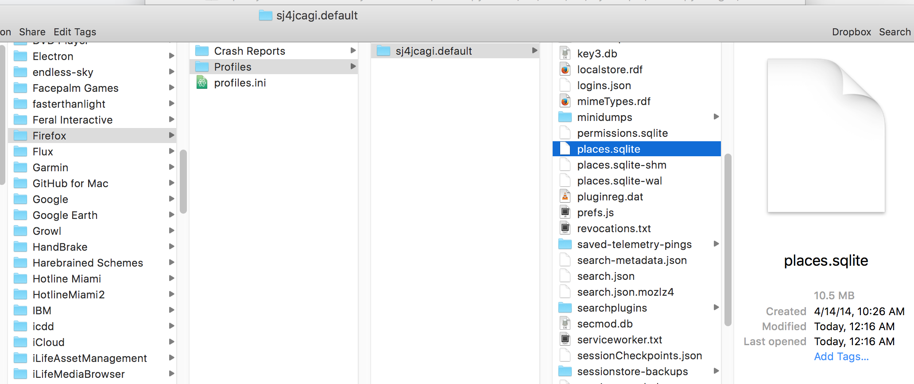

# Know your database to know thyself

Whoever first said ["If you didn't do anything wrong, what do you have to hide?"](https://en.wikipedia.org/wiki/Nothing_to_hide_argument#History) obviously didn't know SQL.


One of the problems with learning databases via public data is that public data is almost always very boring-looking while being incredibly difficult to understand. Even with good crime databases, you almost have to go out and commit a crime to get an understanding of how real-world-incidents are simplified and serialized for database record.

It's much easier to learn databases when you have direct knowledge of where the data came from. So let's take a fun, personal approach to learning SQL by using it to analyze our own web browser history.

Thanks to the excellence of the SQLite database engine (motto: ["Small. Fast. Reliable. Choose any three"](https://www.sqlite.org/mostdeployed.html), it's the database format of choice for virtually every modern browser when it comes to storing the metadata of how you browse the web, including -- unless you're going incognito all the time -- the list of websites you've visited in the past.

Besides practicing SQL, we'll gain some hands-on experience with how application software (in this case, your web browser) interacts with databases -- e.g. storing, updating, and retrieving data. This is a fundamental aspect of databases (more specifically, the core reason of why databases are used by anyone and everyone) that is hard to appreciate if all the SQL you've done so far are `SELECT` queries.

And if you're a frequent browser of the World Wide Web who doesn't go Incognito Mode all the time, you'll probably discover (or rather, _re-remember_) some fun facts about yourself. As I feel about data in general, data is usually so tedious to comprehend that it feels disconnected to "real life". But this is mostly a reflection of how we as humans often misunderstimate the frequency, duration, and repetitiveness of what happens in real life. If you find surprises in a database comprised of data that you've personally created yourself, imagine the potential surprises in every other database.

## The history of social data


As with every data exploration exercise, before diving into the raw SQL, it's best to start with a big picture view to anticipate what we will find when we write and execute our queries. Just for variety's sake, and for the folks that don't browse the web that often with their personal computers, let's consider the data that social network services have on us:

IMG

### Your worst page on the Internet

Exhibit A: the Facebook News Feed. In case you are too young to remember, back in the old days, starting a relationship with someone meant poking them, then hoping they'd check out your profile page and see the new profile pic you just uploaded, as well as your relationship status.

[When Facebook introduced the News Feed](https://web.archive.org/web/20061024024250/http://blog.facebook.com/blog.php?post=2207967130), all of these profile-updating _events_ were collated into a single list, so friends didn't have to manually check each others' pages to see new updates:

> You've probably noticed that Facebook looks different today. We've added two cool features: News Feed, which appears on your homepage, and Mini-Feed, which appears in each person's profile.

It's difficult to imagine today a Facebook without the News Feed, but back in 2006, [some controversy was stirred](http://content.time.com/time/nation/article/0,8599,1532225,00.html):

> On Tuesday morning the popular social networking site unrolled a new feature dubbed the "News Feed" that allows users to track their friends' Facebook movements by the minute. For many of Facebook's 8 million-plus student users, it was too much. Within 24 hours, hundreds of thousands of students nationwide organized themselves to protest the new feature. Ironically, they're using Facebook to do it.
>
> By its nature, News Feed is intrusive, and that's what upsets students. It's one thing to casually check out a friend's updated profile between classes. It's another to be unwillingly inundated with each friend's latest Facebook antics...Several college newspapers also picked up the story this morning. Headlines include "Facebook is watching you," "Furious with Facebook" and "Facebook fumbles with changes."

Facebook today continues to find new ways to collate data that amaze its users and inspire new superlatives. For example, your Activity Log, which only includes what you yourself have typed into Facebook's search page, was deemed["The Worst Page on the Internet" by BuzzFeed's Charlie Wertzel](https://www.buzzfeed.com/charliewarzel/you-can-now-view-your-facebook-search-history-and-it-is-the):

> Facebook, as it turns out, has been collecting and saving your search queries and, with a little digging, you can go back and look through your history. It is, of course, a terrible, shameful reminder of past whims, desires, boring queries, and any number of things that should never be and must be immediately killed with hellfire.
>
> It is the worst page on the internet.

Wertzel's search history page was so terrible that he redacted a screenshot of it. But you can visit your own search history page in your browser at this URL (replace `YOUR_USER_ID` with whatever your Facebook username is):

`https://www.facebook.com/YOUR_USER_ID/allactivity?privacy_source=activity_log&log_filter=search`

Here's a partial screenshot of mine:


The Activity Log webpage is a browser-friendly but limited view of your data. Facebook allows [you to download a copy of your own archived data](https://www.facebook.com/help/131112897028467/) via your [personal Settings page](https://www.facebook.com/settings).


Other social networks also provide ways to download bulk copies of your associated user data:

- [Google Search ](https://support.google.com/websearch/answer/6068625?hl=en) (_not_ the same as the search history stored in Google Chrome on your computer)
- [Google Takeout](https://takeout.google.com/settings/takeout) (data from specific Google services, including Maps, Mail, and YouTube)
- [Twitter tweets](https://support.twitter.com/articles/20170160)

These data dumps -- which, I have to emphasize, are *not* the totality of the kinds of data that these services have on you -- generally come as CSV files that you can import into a SQLite database on your own. Their schemas will be different from those of your browser histories, but the type of searches will be the same.


### The power of lists

As a closing corollary to what BuzzFeed's Wertzel wrote, the strongest advice I have when it comes to data visualization is: When you have interesting data, you don't need to have design or technical skill to make a compelling data visualization. Just make a list.

And if your list still seems boring, and/or is too long to actually publish, then filter it. Going back to the Facebook example, if you do download all of your data, you'll get a zip file full of separate lists-as-webpages, as each kind of thing you've done on Facebook, including pokes, wall posts, friendships, videoing, and messaging -- has its own list.

Here's what the __messages.html__ page looks like:


Speaking of Facebook messaging, how does Facebook know, _as soon_ as I type in the letter `J`, exactly which 5 users I'm likely to send a message to, starting from their list of the hundreds of millions of all Facebook users to whom I am allowed to send a message?


Well, the filtering could be as easy as starting from the list of my friends who have a `J` in their name, and from those friends, combined with a pivot-table-like aggregation on those names, the top 5 friends sorted by how many messages I've sent to them.


# The history of our web browsing as SQLite databases

While it's possible to download our bulk account data from the online services we use, it's rare that we'll get it in database form -- at best, we'll get a list of our messages in CSV form, which we can then import into a database. And even then, we won't get _everything_ a service has on us, including the meta of our metadata. In the Facebook data, I don't see that the friend's list includes when we befriended each other, or how many times we've viewed each others' profiles.

So let's go back to the history of our web browsers. It's not _social_, but the kinds of things we're interested in -- such as the number of visits we've made per page or site -- are basically the same queries we would have for our social media data.

More importantly, we can get this data in its most complete form, the way our browsers access it. And because it's in SQLite database format, we don't have to do any data importing/exporting work.


## Our browser history as viewed in the History menu


Every time we visit a website in a modern web browser, by default, the browser saves a record of that visit to a database file.

The __History menu__ is the easiest-to-find manifestation of this data. Usually, this menu contains at least the __titles__ of the web pages most recently visited:



The __History__ menu also contains an option to view a more comprehensive view of the data, usually a table showing the URL and date of the visit:


Even though it was just a few months ago, I have no idea what the hell is at "Church St. and 27th St." or what I was so apparently obsessed with it (note: if you're a little familiar with web development, the multiple listed visits to that Google Maps page is probably a result of how zooming/panning in GMaps triggers a page visit).


This history data is used to power other browser features, such as the autocomplete functionality in the browser bar.

Here are my autocomplete suggestions when I type `nyt` in the Safari Browser on my personal laptop (note that it draws from several datasets, including Bookmarks):


Because I don't (or at least I don't think I do) use Apple's iCloud to sync my user data, which would include browser and bookmark history, I get different results autocomplete results with `nyt` -- presumably, from the SQLite database stored on my phone:


## How to find the SQLite databases of your browsers' histories

Note: This section is only concerned with __the filenames/locations of the SQLite database files__. As far as I know (and *expect*), the data _formats/schemas_ for each browser are similar across every platform, which means the  SQL queries should be similar (if not exactly the same.).

The following instructions on how to fine the database filenames only apply to __OS X, versions 10.6+__, because I don't have enough laptops to simulate different versions of Windows and Linux, and roughly 99% of Stanford students seem to be Mac users, anyway.

If you're not in that boat, finding the SQLite database on your system is as easy as a Google search.

Sample references:

- FireFox: [Profiles - Where Firefox stores your bookmarks, passwords and other user data (official Mozilla support page)](https://support.mozilla.org/en-US/kb/profiles-where-firefox-stores-user-data)
- Chrome: [Where does Chrome save its SQLite database to? (Stack Overflow)](http://stackoverflow.com/posts/16742333/revisions)
- Safari: [ForensicsWiki entry](http://www.forensicswiki.org/wiki/Apple_Safari)
- Internet Explorer: Apparently Internet Explorer uses its own special format, the data in which, I'm sure can be ported into a SQL database. If you insist on going down that rabbit hole, [you can start here](https://en.wikipedia.org/wiki/Index.dat). and [here](http://superuser.com/questions/678497/where-is-ie-11-history-located-on-the-fs)


### Locations of Browser history SQLite databases in OS X 10.6+, by browser

The following instructions are _generalized_, because the exact _name_ of the database file can vary depending on how your computer and browser is setup.

#### Browser data directories

In general, on OS X 10.6+, these should be the names of the __directories__ in which the history database files can be found:

- Firefox: `~/Library/Application Support/Firefox/Profiles`
- Safari: `~/Library/Safari/History`
- Chrome: `~/Library/Application Support/Google/Chrome/Default/`


#### Navigating to your user data folders

If you're using a database client such as DB Browser, I recommend launching it, and then going to the **Open Database...** action, i.e. via menu __File > Open Database...>__. Or, preferably, the keyboard shortcut of: `Command-O`.

You can _try_ to navigate the directory paths mentioned above. But if you've only navigated your file system via point-and-double-clicking, or are unfamiliar with the phrases  file system", "user home directory", or "make sure to escape that whitespace", I'll skip explaining what "the squiggly line is" and tell you to just hit the following keyboard shortcut for the action, __Go to the Folder__:

      Command-Shift-G

And then paste the path for your specific browser:


Using Google Chrome as an example: `~/Library/Application Support/Google/Chrome/Default/`

The file Finder should take you to the specified directory. Now look for the __filename__ (it typically won't have a `.sqlite` file extension) and double-click to open:


The specific filenames for each browser:

- Chrome: `History`
- Safari: `History.db`
- Firefox `default/places.sqlite`

Note about Firefox: This might vary slightly on your system, as Firefox might rename the `default` folder to something a little more random:



And now your browser history is just another SQLite database for browsing. Here's the DB Browser client's Database Structure view of my Safari browser's History data:


## The schema of web browser history data

While a web page visit may seem like just a web page visit no matter what web browser used, each specific browser has its own way of storing the metadata of the visit.

###


## How each databases track time

Now we take detour into what is often one of the most frustratingly confusing topics in programming: how computers keep track of _time_. This is going to feel like a technobabble-laden subject, but only if you're a normal human being accustomed to thinking of events as happening "Last year", "next Monday", or, for Excel-using humans living in America: `12/25/15`.

But since computers are required to track moments in time with much greater precision, and to do track a moment in time _right now_, as well as next week and into the next decade, and to do it without knowing which time zone the computer (or its servers) might be located -- among [many, many other details](http://infiniteundo.com/post/25326999628/falsehoods-programmers-believe-about-time) -- good and _reliable_ databases do not store time values in easy-to-read formats such as `yesterday` or even something seemingly verbosely precise as: `Tuesday, December 25, 2014, 3:59 PM`

### What's now, now?

Central to understanding how computers store time is understanding how we humans think of _now_. If _right now_, I call 911 in my city and tell the operator that sometime last year, I saw a "light-skinned guy wearing jeans" run away from a murder scene, the operator might just hang up on me. But if I make that same call and instead, describe the time of my observation as "today, at 3:59 PM", you might hear that same vague description go out on police scanners and emergency news broadcasts.

The only difference is the perceived time between what I and the operator experience as "now". Assuming we're on the same planet and city, if the time is now 4:01 PM "today", then my call is very helpful to the police, vague as the physical description is.

But what if "today" happened to be daylights saving time? And in the excitement of glancing at my watch while calling the operator, I neglected to account for my watch being an hour late, and the scene of the crime might have 100 different people passing through in an hour. Well, a lot of guys who are not the suspect are about to get stopped-and-frisked.

That's a bit of an extreme rare situation. But at this very minute, computerized databases are recording and recalling billions of events down to millisecond precision. So what feels like extremely rare events to humans, such as a time-zone/math-ignorant [tabloid reporter hoping to shame a celebrity for tweeting during a funeral](http://www.dailymail.co.uk/news/article-2350777/Twitter-time-bug-Alec-Baldwins-wifes-funeral-tweets-led-actor-unleashing-homophobic-rant.html) -- are frequent occasions in a  database.

The [movie Spaceballs does a nice job](https://www.youtube.com/watch?v=gNIwlRClHsQ) summarizing how confusing "now" can be, for humans and computers:

<iframe width="853" height="480" src="https://www.youtube.com/embed/gNIwlRClHsQ?rel=0" frameborder="0" allowfullscreen></iframe>


### Time as a number

Unlike spreadsheets and other databases, SQLite does not have a native _data type_ of time. Instead, of values that _look_ like values of time, e.g. `2016-01-10 05:12:00`, SQLite databases will often store absolute time values as an integer (or decimal) number of seconds (or milliseconds).

Instead of `2016-01-10 05:12:00`, a database might store `1452412800.0`. What does that number actually mean? It means, precisely, the time at *1 billion, 452 million, 412 thousand seconds* __since midnight on January 1, 1970, in the UTC timezone__

That date is referred to as[the Unix Epoch](https://en.wikipedia.org/wiki/Unix_time). It's a common convention for programmers and programs, and thus, their databases, to store time in relation to that date.

Programs and programmers don't have to use Unix Epoch as a reference point, or to measure things in time. For example, in some versions of Excel, if you enter a value representing the date of "December 22, 2013" -- Excel will convert it into something that looks like `12/22/2013` but that Excel internally tacks as, well, December 22, 2013.

That's why it's easy enough to convert that `12/22/2013` to another kind of date format, such as `2013-12-22`.

However, if you try converting that cell to a plain __Text__ format, you might get a number of 41569, as [described in this Stack Overflow question](http://stackoverflow.com/questions/20447813/excel-weird-behaviour-with-dates-text).

That number is _clearly_ too small to refer to seconds since 1970, or even seconds since 2013. Instead, [Excel's convention](http://excel.officetuts.net/en/training/how-excel-stores-date-and-time) is to use __January 1, 1900__ as the reference point, and __days__ as the unit of time. So `41569` stands for "41,569 days since January 1st, 1990". Or, if you're on Windows, or is it OS X, [the starting point is 1904](https://support.microsoft.com/en-us/kb/214330. Because why not, Microsoft?) (I'm not going to even bother looking up what Google Sheets or OpenOffice decided on.)


Bottom-line is, databases often store timestamps as whole numbers. In SQLite human-readable timestamps is a matter of


### How Firefox stores time in its database

As it turns out, programs


### How Safari stores time in its database


Python: 1476955488.082642


### How Safari stores time

http://stackoverflow.com/questions/34167003/what-format-is-the-safari-history-db-history-visits-visit-time-in


Safari: 498636152.151189


select
datetime(visit_time + 978307200, 'unixepoch', 'localtime')
AS date
from history_visits


Each brow

Once we've
